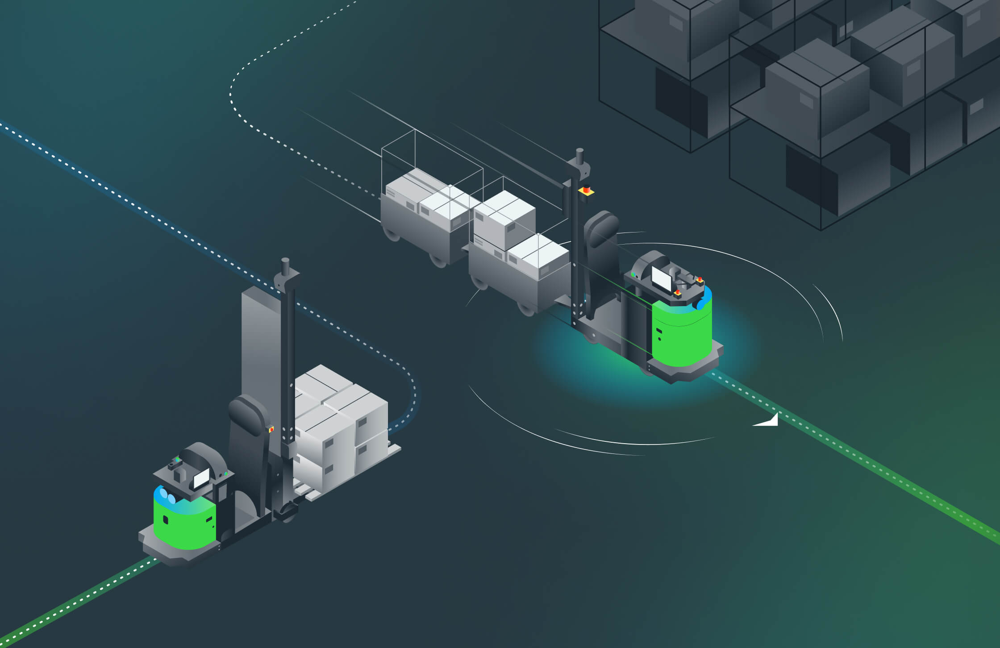

AI MODEL IN THE LOOP · PATH PREDICTION
AI MODEL
path-prediction model
state · telemetry ↑
↓ AI path prediction
path prediction
⚠ unusable
MODEL VALIDATION
· trustworthy?
· valid for THIS AMR?
· valid in THIS context?
✗ NOT VALIDATED → discard
an AI
path prediction
is worthless unless the model is
trustworthy
and
valid
— for
THIS AMR
, in
THIS context